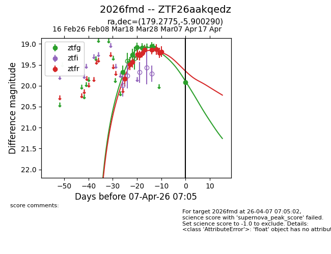
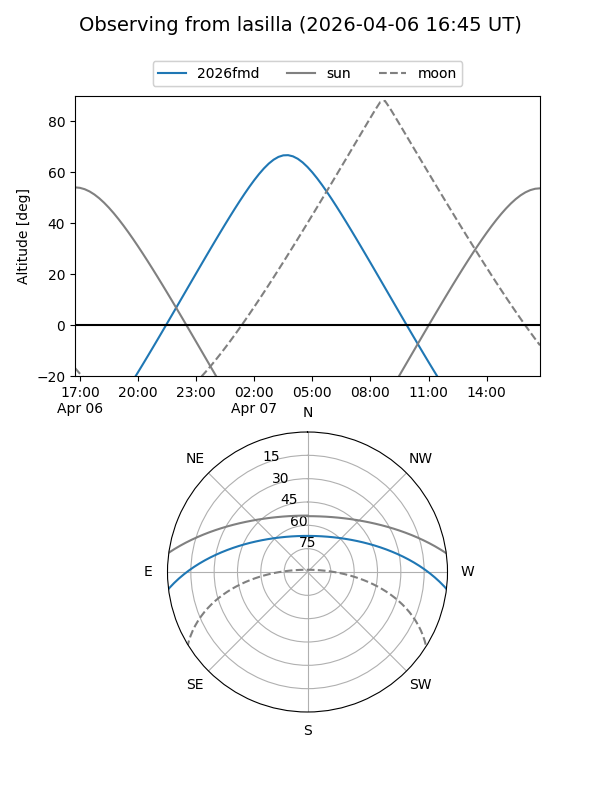
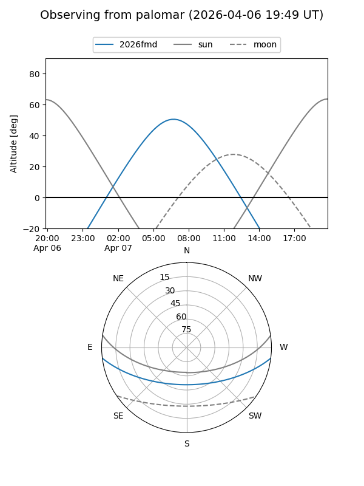

2026fmd
Target 2026fmd at 2026-04-07 07:09
Aliases and brokers:
FINK: link
Lasair: link
ALeRCE: link
TNS: link
YSE: link
alt names
ZTF26aakqedz (ztf,fink_ztf)
2026fmd (tns,yse)
Coordinates:
equatorial (ra, dec) = 179.2775,-5.90029
equatorial (HMS+DMS) = 11:57:06.61,-05:54:01.04
galactic (l, b) = (279.2413,+54.45336)
Flags:
Photometry:
last ztfg=19.92, ztfr=19.18
9 ztfg, 11 ztfr detections
Lightcurve

Visibility


Additional plots